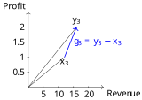
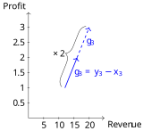
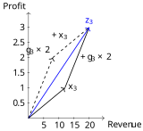
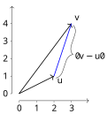
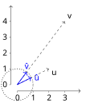
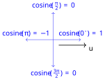

3 Vectors, Matrices, and Geometric Thinking
When we have multiple row vectors of data instances, they form a data matrix. For example, a data matrix of the two teams \(A^T\) and \(B^T\) can be represented as \(D\):
\[\begin{aligned} D & = & \begin{pmatrix} 1 & 0 & 1 & 1 & 0 & 1 & 0 \\ 0 & 1 & 1 & 0 & 1 & 1 & 1 \end{pmatrix} \end{aligned}\]
Here \(D\) is an \(n \times m\) matrix, with \(n=2\) rows and \(m=7\) columns. That is, \(D \in \mathbb{R}^{n\times m}\), where \(n=2\) and \(m=7\). In \(D\), we not only have row vectors for the teams but also column vectors for the skills:
\[\begin{aligned} \begin{matrix} AI & InfoVis & Math & Python & R & SQL & Stats \\ = \begin{pmatrix} 1 \\ 0 \end{pmatrix} & = \begin{pmatrix} 0 \\ 1 \end{pmatrix} & = \begin{pmatrix} 1 \\ 1 \end{pmatrix} & = \begin{pmatrix} 1 \\ 0 \end{pmatrix} & = \begin{pmatrix} 0 \\ 1 \end{pmatrix} & = \begin{pmatrix} 1 \\ 1 \end{pmatrix} & =\begin{pmatrix} 0 \\ 1 \end{pmatrix} \end{matrix} \end{aligned}\]
3.1 Basic Matrix Operation
Consider another data set about the annual revenue and profit of three companies. Let \(X\) be last year’s data (in million dollars):
\[\begin{aligned} X & = & \begin{matrix} x_1 \\ x_2 \\ x_3 \end{matrix} \begin{pmatrix} 3 & 0.5 \\ 20 & 1.5 \\ 12 & 1 \end{pmatrix} \end{aligned}\]
where each row is a 2-dimensional vector and can be visualized in Figure 3.1.
Let \(Y\) be this year’s data as follow, which, likewise, can be visualized as \(3\) row vectors in Figure 3.2:
\[\begin{aligned} Y & = & \begin{matrix} y_1 \\ y_2 \\ y_3 \end{matrix} \begin{pmatrix} 6 & 1 \\ 15 & 1 \\ 16 & 2 \end{pmatrix} \end{aligned}\]
Apparently, \(X\) and \(Y\) have the same dimensionality – \(X \in \mathbb{R}^{3\times2}\) and \(Y \in \mathbb{R}^{3\times2}\) – as they are about the same three companies (rows) and two variables (columns). We can perform simple computation such as addition and subtraction on the matrices.
For example, it is easy to compute the increase or decrease in revenue and profit with subtraction:
\[\begin{aligned} G & = & Y - X \\ & = & \begin{pmatrix} 6 & 1 \\ 15 & 1 \\ 16 & 2 \end{pmatrix} - \begin{pmatrix} 3 & 0.5 \\ 20 & 1.5 \\ 12 & 1 \end{pmatrix} \\ & = & \begin{pmatrix} 6 - 3 & 1 - 0.5 \\ 15 - 20 & 1 - 1.5 \\ 16 - 12 & 2 - 1 \end{pmatrix} \\ & = & \begin{matrix} g_1 \\ g_2 \\ g_3 \end{matrix} \begin{pmatrix} 3 & 0.5 \\ -5 & -0.5 \\ 4 & 1 \end{pmatrix} \end{aligned}\]
Matrix \(G\), the result of the subtraction, contains data about growth (increases and decreases). The rows of matrix \(G\) are vectors connecting respective \(X\) vectors to \(Y\) vectors. Let’s single out the \(3^{rd}\) company from the data, i.e. \(x_3\), \(y_3\), and \(g_3\). As shown in Figure 3.3, subtraction \(g_3=y_3-x_3\) is the vector that starts at \(x_3\) and ends at \(y_3\).

Suppose the rate of growth in \(G\) is projected to continue (the same) next year. This will double the growth, which can be computed by:
\[\begin{aligned} G \times 2 & = & \begin{pmatrix} 3 & 0.5 \\ -5 & -0.5 \\ 4 & 1 \end{pmatrix} \times 2 \\ & = & \begin{pmatrix} 3 \times 2 & 0.5 \times 2 \\ -5 \times 2 & -0.5 \times 2 \\ 4 \times 2 & 1 \times 2 \end{pmatrix} \\ & = & \begin{pmatrix} 6 & 1 \\ -10 & -1 \\ 8 & 2 \end{pmatrix} \end{aligned}\]

Here every value in matrix \(G\) is doubled; so is every vector – row or column – in the matrix. For example, Figure 3.4 shows when \(g_3\), the growth vector of the \(3^{rd}\) company (row), multiplies \(2\), the vector doubles its length (magnitude) in the same direction. Multiplying a matrix with a scalar (single number) results in a matrix of the same dimensionality, in which every value is multiplied by the same scalar. Note the multiplication can be written as \(2 \cdot G\), \(2G\) or, more generally, \(aG\) given a scalar \(a\) and a matrix \(G\).
Now with the projected growth (or decrease) data in the \(2G\) matrix, we can add them to the last year’s data matrix \(X\) to compute the final projection for next year \(Z\):
\[\begin{aligned} Z & = & Y + 2G \\ & = & \begin{pmatrix} 3 & 0.5 \\ 20 & 1.5 \\ 12 & 1 \end{pmatrix} + \begin{pmatrix} 6 & 1 \\ -10 & -1 \\ 8 & 2 \end{pmatrix} \\ & = & \begin{pmatrix} 3 + 6 & 0.5+1 \\ 20-10 & 1.5-1 \\ 12 + 8 & 1 + 2 \end{pmatrix} \\ & = & \begin{matrix} z_1 \\ z_2 \\ z_3 \end{matrix} \begin{pmatrix} 9 & 1.5 \\ 10 & 0.5 \\ 20 & 3 \end{pmatrix} \end{aligned}\]

Note that the data matrix \(Z\) projected from last year’s numbers in \(X\) should be the same as that projected based on this year’s data in \(Y\), i.e. \(Z=X+2G=Y+G\) given that \(G=Y-X\).
Geometrically, for corresponding vectors in the matrices, the addition operation is to connect them head to tail. For example, as shown by the solid lines in Figure 3.5, for the \(3^{rd}\) row vector, \(x_3+g_3\times2\) is to connect vectors \(x_3\) and \(2g_3\) and the result is \(z_3\), which draws from the tail of \(x_3\) to the head of \(2g_3\). Vector and matrix addition is communicative, the same result can be obtained by \(2g_3 + x_3\), as shown by dashed lines in Figure 3.5.
Continue with the corresponding practice activity to turn Basic Matrix Operation into a calculation, implementation, visualization, diagnostic, or interpretation task.
3.2 Sum of Squares
Suppose \(x\) is a m-dimensional column vector, which is essentially a matrix of \(m\) rows and \(1\) column: \(x \in \mathbb{R}^{m\times1}\).
\[\begin{aligned} \begin{matrix} x & = & \begin{pmatrix} x_1 \\ x_2 \\ ... \\ x_m \end{pmatrix} \end{matrix} \end{aligned}\]
Now we can transpose the column vector \(x\) into a row vector \(x^T\), which is a matrix of \(1\) row and \(m\) columns, i.e. \(x^T \in \mathbb{R}^{1\times m}\):
\[\begin{aligned} \begin{matrix} x^T & = & \begin{pmatrix} x_1 & x_2 & ... & x_m \end{pmatrix} \end{matrix} \end{aligned}\]
We can multiply \(x^T\) with \(x\) and get their dot product:
\[\begin{aligned} \begin{matrix} x^Tx & = & \begin{pmatrix} x_1 & x_2 & ... & x_m \end{pmatrix} \times \begin{pmatrix} x_1 \\ x_2 \\ ... \\ x_m \end{pmatrix} \\ & = & x_1^2 + x_2^2 + .. + x_m^2 \\ & = & \sum_{i=1}^{m} x_i^2 \end{matrix} \end{aligned}\]
The result is the total sum of squares, a scalar. Sum of squares is often performed on error terms in statistical analysis. For example, given the following errors of three instances:
\[\begin{aligned} \begin{matrix} e & = & \begin{pmatrix} 0.5 \\ 0.2 \\ 0.7 \end{pmatrix} \end{matrix} \end{aligned}\]
We can compute the Error Sum of Squares (ESS) by:
\[\begin{aligned} \begin{matrix} e^Te & = & \begin{pmatrix} 0.5 & 0.2 & 0.7 \end{pmatrix} \times \begin{pmatrix} 0.5 \\ 0.2 \\ 0.7 \end{pmatrix} \\ & = & 0.5^2 + 0.2^2 + 0.7^2 \\ & = & 0.78 \end{matrix} \end{aligned}\]
Continue with the corresponding practice activity to turn Sum of Squares into a calculation, implementation, visualization, diagnostic, or interpretation task.
3.3 Vector Magnitude (Length)
Any vector has two components: a direction and a magnitude (length). Taking the square root of the sum of squares, we can compute a vector’s magnitude:
\[\begin{aligned} \begin{matrix} \left\lVert x \right\rVert & = & \sqrt{x^Tx} \\ & = & \sqrt{\sum_{i=1}^{m} x_i^2} \end{matrix} \end{aligned}\]
which is the length from the origin to the data point \(x\). For example, given a two-dimensional vector \(v\):
\[\begin{aligned} \begin{matrix} v & = & \begin{pmatrix} 3 \\ 4 \end{pmatrix} \end{matrix} \end{aligned}\]
Its magnitude can be computed by:
\[\begin{aligned} \begin{matrix} \left\lVert v \right\rVert & = & \sqrt{3^2 + 4^2} \\ & = & 5 \end{matrix} \end{aligned}\]
which is the length shown in Figure 3.6.
Continue with the corresponding practice activity to turn Vector Magnitude (Length) into a calculation, implementation, visualization, diagnostic, or interpretation task.
3.4 Vector Distance
Let \(y\) be another column vector with the same dimensionality \(y \in \mathbb{R}^{m\times1}\):
\[\begin{aligned} \begin{matrix} y & = & \begin{pmatrix} y_1 \\ y_2 \\ ... \\ y_m \end{pmatrix} \end{matrix} \end{aligned}\]
The difference between \(x\) and \(y\) can be computed by:
\[\begin{aligned} \begin{matrix} x - y & = & \begin{pmatrix} x_1 \\ x_2 \\ ... \\ x_m \end{pmatrix} - \begin{pmatrix} y_1 \\ y_2 \\ ... \\ y_m \end{pmatrix}\\ & = & \begin{pmatrix} x_1 - y_1 \\ x_2 - y_2 \\ ... \\ x_m - y_m \end{pmatrix} \end{matrix} \end{aligned}\]
which, geometrically, is the vector connecting the head of \(x\) to that of \(y\). The magnitude of this difference vector can be computed using Equation [eq-matrix-magnitude]:
\[\begin{aligned} \begin{matrix} \left\lVert x - y \right\rVert & = & \sqrt{(x-y)^T(x-y)} \\ & = & \sqrt{\sum_{i=1}^{m} (x_i-y_i)^2} \end{matrix} \end{aligned}\]
Consider two two-dimensional vectors:
\[\begin{aligned} \begin{matrix} u & = & \begin{pmatrix} 2 \\ 1 \end{pmatrix} & v & = & \begin{pmatrix} 3 \\ 4 \end{pmatrix} \end{matrix} \end{aligned}\]
There difference can be computed by:
\[\begin{aligned} \begin{matrix} v - u & = & \begin{pmatrix} 3 \\ 4 \end{pmatrix} - \begin{pmatrix} 2 \\ 1 \end{pmatrix} \\ & = & \begin{pmatrix} 1 \\ 3 \end{pmatrix} \end{matrix} \end{aligned}\]

Their Euclidean distance can be computed by the magnitude of their difference:
\[\begin{aligned} \begin{matrix} \left\lVert v - u \right\rVert & = & \sqrt{1^2 + 3^2} \\ & = & \sqrt{10} \end{matrix} \end{aligned}\]
Euclidean distance is symmetric as a metric, i.e. \(\left\lVert v-u \right\rVert = \left\lVert u-v \right\rVert\). The distance between the two vectors is illustrated in Figure 3.7.
Continue with the corresponding practice activity to turn Vector Distance into a calculation, implementation, visualization, diagnostic, or interpretation task.
3.5 Vector Angle
For any vector \(x\), we can factor in its magnitude with \(\frac{1}{\left\lVert x \right\rVert}\), we obtain its unit vector:
\[\begin{aligned} \begin{matrix} \hat{x} & = & \frac{x}{\left\lVert x \right\rVert} \end{matrix} \end{aligned}\]
of which the length is normalized to \(1\). We can do the same to another vector \(y\) to obtain its unit vector:
\[\begin{aligned} \begin{matrix} \hat{y} & = & \frac{y}{\left\lVert y \right\rVert} \end{matrix} \end{aligned}\]
If \(x\) and \(y\) are both column vectors of the same dimensionality, \(x \in \mathbb{R}^{m}\) and \(y \in \mathbb{R}^{m}\), we can compute their dot product by:
\[\begin{aligned} \begin{matrix} x^Ty & = & \begin{pmatrix} x_1 & x_2 & ... & x_m \end{pmatrix} \times \begin{pmatrix} y_1 \\ y_2 \\ ... \\ y_m \end{pmatrix} \\ & = & x_1 y_1 + x_2 y_2 + .. + x_m y_m \\ & = & \sum_{i=1}^{m} x_i y_i \end{matrix} \end{aligned}\]
Likewise, we can compute the dot product of their unit vectors:
\[\begin{aligned} \begin{matrix} \hat{x}^T\hat{y} & = & \begin{pmatrix}\frac{x}{\left\lVert x \right\rVert}\end{pmatrix}^T \begin{pmatrix}\frac{y}{\left\lVert y \right\rVert} \end{pmatrix} \\ & = & \sum_{i=1}^{m} \frac{x_i}{\left\lVert x \right\rVert} \frac{y_i}{\left\lVert y \right\rVert} \end{matrix} \end{aligned}\]
This turns out to be the cosine of the angle between the two vectors \(x\) and \(y\):
\[\begin{aligned} \begin{matrix} cosine(x,y) & = & \begin{pmatrix}\frac{x}{\left\lVert x \right\rVert}\end{pmatrix}^T \begin{pmatrix}\frac{y}{\left\lVert y \right\rVert} \end{pmatrix} \\ & = & \frac{x^T y}{\left\lVert x \right\rVert \left\lVert y \right\rVert} \\ & = & \sum_{i=1}^{m} \frac{x_i}{\left\lVert x \right\rVert} \frac{y_i}{\left\lVert y \right\rVert} \\ & = & \frac{\sum_{i=1}^{m} x_i y_i}{\left\lVert x \right\rVert \left\lVert y \right\rVert} \end{matrix} \end{aligned}\]
Consider the same two vectors discussed earlier:
\[\begin{aligned} \begin{matrix} u & = & \begin{pmatrix} 2 \\ 1 \end{pmatrix} & v & = & \begin{pmatrix} 3 \\ 4 \end{pmatrix} \end{matrix} \end{aligned}\]
Their magnitudes are:
\[\begin{aligned} \begin{matrix} \left\lVert u \right\rVert & = & \sqrt{2^2 + 1^2} \\ & = & \sqrt{5} \\ \left\lVert v \right\rVert & = & \sqrt{3^2 + 4^2} \\ & = & 5 \end{matrix} \end{aligned}\]
The two vectors can be normalized to unit vectors:
\[\begin{aligned} \begin{matrix} \hat{u} & = & \frac{1}{\sqrt{5}} \cdot \begin{pmatrix} 2 \\ 1 \end{pmatrix} & = & \begin{pmatrix} 0.894 \\ 0.447 \end{pmatrix} \\ \hat{v} & = & \frac{1}{5} \cdot \begin{pmatrix} 3 \\ 4 \end{pmatrix} & = & \begin{pmatrix} 0.6 \\ 0.8 \end{pmatrix} \end{matrix} \end{aligned}\]

As shown in Figure 3.8, the normalized unit vectors \(\hat{u}\) and \(\hat{v}\) point to the same directions of their original vectors \(u\) and \(v\) respectively. However, the normalization produce vectors of equal magnitudes. As the dotted circle shows, the unit vectors are part of a unit circle with radius \(1\).
Please note that we can use a circle to visualize the unit vectors on the 2-dimensional space (for the 2-dimensional vectors here). For \(3\) dimensions, we can use a unit sphere for such visualization. For higher dimensionality, however, we can hardly visualize it but the same idea holds true mathematically with the notion of hypersphere.
Now the dot product of the two unit vectors is:
\[\begin{aligned} \begin{matrix} \hat{u}^T \hat{v} & = & \begin{pmatrix} 0.894 & 0.447 \end{pmatrix} \cdot \begin{pmatrix} 0.6 \\ 0.8 \end{pmatrix} \\ & = & 0.894\times0.6 + 0.447\times0.8 \\ & = & 0.894 \end{matrix} \end{aligned}\]

which is the cosine of the angle between \(u\) and \(v\), shown in Figure 3.8. The arc cosine of \(0.894\) corresponds to an angle of roughly \(27^\circ\) out of a \(360^\circ\) full circle, or \(0.465\) on a \(2\pi\) scale. Cosine values range between \(-1\) and \(1\): it is \(1\) when two vector are in the exact same direction (parallel) and \(-1\) when they are in the opposite direction (a \(180^\circ\) or \(\pi\) angle). Cosine is \(0\) when two vectors are orthogonal (perpendicular) to each other (right angle). See Figure 3.9.
Continue with the corresponding practice activity to turn Vector Angle into a calculation, implementation, visualization, diagnostic, or interpretation task.
3.6 Vector Cross Product
Continue with the corresponding practice activity to turn Vector Cross Product into a calculation, implementation, visualization, diagnostic, or interpretation task.
3.7 Optimization
Continue with the corresponding practice activity to turn Optimization into a calculation, implementation, visualization, diagnostic, or interpretation task.
3.8 Kernel Functions
Continue with the corresponding practice activity to turn Kernel Functions into a calculation, implementation, visualization, diagnostic, or interpretation task.
3.9 Graph Analysis
Continue with the corresponding practice activity to turn Graph Analysis into a calculation, implementation, visualization, diagnostic, or interpretation task.